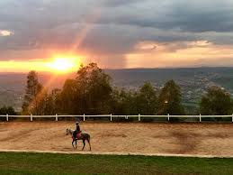
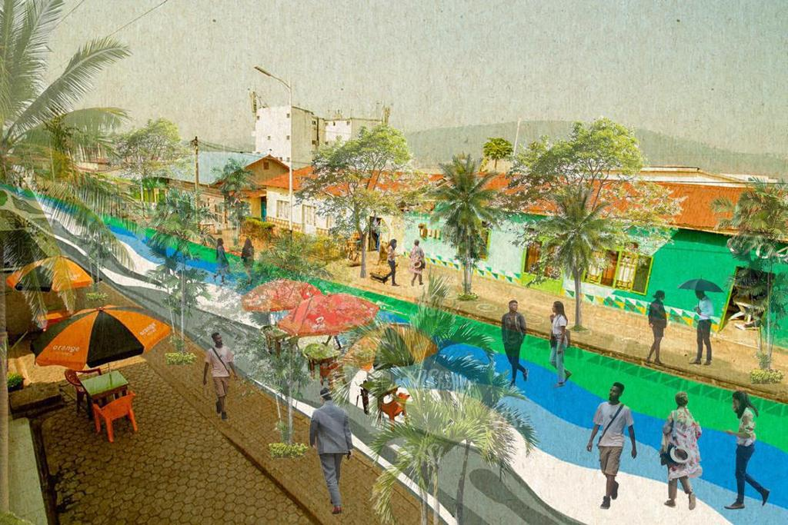

Fazenda Sengha
📍 Mount Kigali, Rwanda
Fazenda Sengha is a favorite Kigali getaway for outdoor adventure and nature. Located just outside Kigali, this nature reserve is a great place to relax and enjoy nature.

📍 Mount Kigali, Rwanda
Fazenda Sengha is a favorite Kigali getaway for outdoor adventure and nature. Located just outside Kigali, this nature reserve is a great place to relax and enjoy nature.

📍 Nyamirambo, Rwanda
Mumarange is a local food court where you can try local food and drinks. It is a great place to relax and enjoy different foods and drinks.

📍 Nyarutarama, Rwanda
The Kigali Golf Club is a golf club in Kigali, Rwanda. It is a popular destination for tourists and locals alike with multiple golf courses.